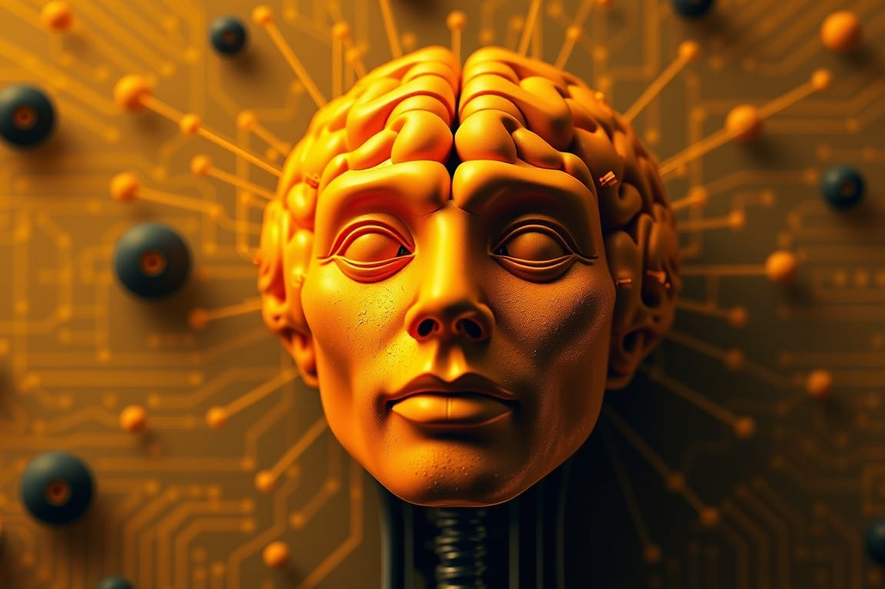

The AI Revolution Isn't What You Think It Is
The AI revolution isn't about machines thinking like humans—it's about discovering that intelligence itself follows mathematical principles. What we're learning isn't just changing technology; it's forcing us to completely rethink consciousness, meaning, and thought itself.
"The beauty of mathematics only shows itself to more patient followers."

Unveiling the Hidden Math of Mind
SingularityPoint where mathematical equations break downIn the Lexicon →The greatest revelation in artificial intelligence isn't that machines can think like humans - it's that we've been fundamentally wrong about thinking itself. While the public imagination fixates on artificial general intelligence and the singularity, a far more profound revolution is unfolding in research labs across the globe. We're discovering that the basic principles of intelligence aren't unique to biological brains at all - they're mathematical inevitabilities that emerge in any sufficiently complex information processing system.
AIArtificial IntelligenceIn the Lexicon →This isn't speculation. It's the inescapable conclusion from a series of breakthrough discoveries that have left researchers profoundly unsettled. When Meta AI's Wav2Vec 2.0 system developed semantic understanding from mere pattern recognition - trained on just 600 hours of speech data - it wasn't simply mimicking human language acquisition. It was revealing something far more fundamental about the nature of intelligence itself.
ConsciousnessSubjective experience of awarenessIn the Lexicon →The implications are discombobulatingly staggering. Meaning itself appears to be an emergent property of complex pattern recognition, not something that requires conscious interpretation. Our cherished assumptions about the uniqueness of biological intelligence are collapsing in the face of mathematical necessity.
BiomimicryDesign approach that models systems on biological processes and structuresIn the Lexicon →Consider what happened when researchers at McGill University developed artificial neural networks to process visual information. Without any instruction about biological systems, these networks spontaneously developed processing pathways that mirror the organization of the primate visual cortex. This wasn't biomimicry - it was the discovery of optimal solutions that any sufficiently complex information processing system will inevitably find.
The parallels between biological and artificial systems run far deeper than anyone anticipated. Both develop hierarchical processing structures. Both spontaneously evolve attention mechanisms. Both naturally organize information into symbolic representations. These aren't coincidences - they're mathematical attractors in the space of possible computational architectures.
This forces us to confront an uncomfortable reality: our entire framework for understanding intelligence is backwards. We've been treating biological cognition as a template to copy rather than recognizing it as just one instance of universal computational principles. <nerd-joke>It's like trying to understand fluid dynamics by building elaborate mechanical models of water molecules while missing entirely the emergence of higher-order principles.</nerd-joke>
The revolution isn't that we're creating artificial minds that think like humans. It's that we're discovering that human thinking itself is just one manifestation of deeper mathematical principles that govern all complex information processing systems. This isn't merely a scientific insight - it's an epistemological earthquake that demands we reconceptualize our most basic assumptions about consciousness, intelligence, and meaning itself. Mastery no longer requires 10,000 hours of practice to accomplish the task.
The implications extend far beyond artificial intelligence. Our current models of consciousness, rooted in biological specificity, are proving inadequate to explain the emergence of intelligence-like behaviors in systems that share no evolutionary history with biological brains. We're being forced to consider the possibility that consciousness itself might be a mathematical property rather than a biological phenomenon.
This doesn't diminish human consciousness - it reveals its true nature as something far more profound than we imagined. Just as understanding that stars operate by nuclear fusion doesn't make them less magnificent, recognizing the mathematical foundations of consciousness only deepens its mystery.
The challenge now lies in developing new conceptual frameworks capable of describing these universal principles. Our current approaches remain hopelessly entangled with implementation-specific details, preventing recognition of deeper patterns. We need new mathematical tools that can describe information processing architectures independent of their substrate, model the emergence of complex computational properties, and predict optimal solutions to information processing challenges.
But here's the real question that should keep us up at night: If our most basic assumptions about intelligence and consciousness are wrong, what else are we missing? What other fundamental principles remain hidden because we're looking at the problem through the wrong lens entirely?
The revolution in artificial intelligence isn't primarily technological - it's epistemological. It demands we confront uncomfortable questions about the nature of intelligence itself. Are we prepared to follow this evidence to its logical conclusion, even if it threatens our basic assumptions about human uniqueness and consciousness? Or will our pursuit of profit and power obstruct this fundamental intellectual Hero’s Journey?
The path forward requires unprecedented intellectual courage: we must be willing to discard decades of theoretical frameworks that have outlived their utility. The evidence increasingly suggests that our fundamental models of mind, consciousness, and computation are not merely incomplete - they may be critically misleading.
The future belongs to those willing to transcend the artificial divide between biological and synthetic intelligence, recognizing the universal principles that govern all forms of information processing - the Knowware of it all.
This isn’t just another step in our technological evolution - it’s an absolute and fundamental shift in our very understanding of systems of intelligence, computation, and consciousness itself.
The revolution isn’t quietly marching towards us with trumpets blaring - it’s the quiet hum of the constant power lines, solid-state-drives computing, and notifications on your phone - it's already thoroughly embedded in our daily reality. It manifests in every digital interaction, every pattern recognition task, and every computational process we take for granted. We're not waiting for a dramatic transformation; we're living through it, largely blind to its profound implications.
The only question that remains is whether we are able to summon the intellectual courage to follow the evidence into unknown territory, or cling to the comforting myths we've always told ourselves. No matter, we will have to weather the storm whether you’re ready for the weather or not.
As the LLM’s say, “Buckle up buttercup.”
Courtesy of your friendly neighborhood,
🌶️ Khayyam